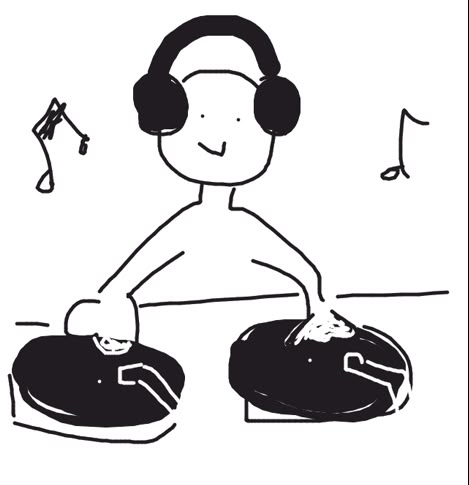

Ph.D. student · AIRIS Lab, KAIST
Hi, I’m Jongho.
Ph.D. student at AIRIS Lab, KAIST.
Spatial Audio
& Sound
Researcher
Skills
- Unity / C#
- Python / Audio ML
- Spatial audio prototyping
- Perceptual study design
